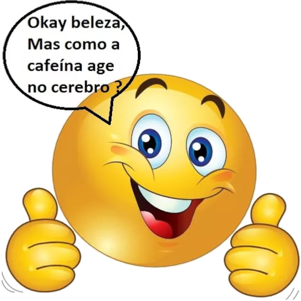
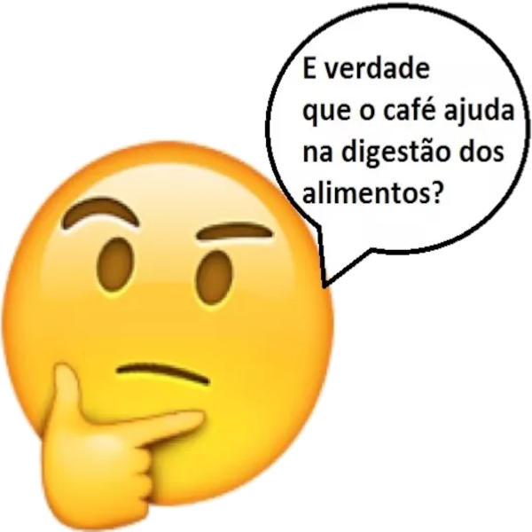

O que tem haver o café com nosso sistema digestório?!
Ele é totalmente indispensável tanto nas universidades quantos escritórios, principalmente em
épocas de relatório ou em finais do semestre, ou até mesmo naquele café da manhã ou também para
deixar aquela preguiça depois do meio-dia do lado.
Eaw já sabe sobre o que estou falando !?
Sim é ele mesmo o CAFÉ !
Todos nós sabemos que o café contém cafeína, além das nossa xícaras de café a cafeína e
encontrada em outros alimentos como chocolate, chás pretos e refrigerantes. Mas garanto que você
já ouviu falarem que a cafeína é um estimulante seria por tal razão que a cafeína te ajuda nas
aulas chatas ou até naqueles relatórios tediosos ou simplesmente pra te manter acordado quando
bate aquela preguiça de tarde. Mas isso não é exatamente assim, no fim das contas você se sente
mais acordado e com mais energia depois de ingerir cafeína, mas o que o café faz impedir seu
corpo de se sentir cansado.
Vou explicar !!!
Mas primeiro vamos entender como ele e digerido no nosso sistema disgetório (pelo nossos
órgãos).
A cafeína e uma das substâncias as quais já são digeridas la no estômago indo para o sistema
nervoso central (cérebro), tendo a absorvição pela a parede do estômago.
Primeiramente a cafeína entra pela boca onde e a porta de entrada, por ela ser um liquido ela não
passara pelo um processo de "mastigação", mas as glândulas salivares que vão fabricas saliva(é
composto pela enzima chamada AMILASE SALIVAR"ptliana")que é responsável pelo
amido e o glicogênio tendo um PH neutro ,também auxiliam no processo de digestão de
alimentos até mesmo esse café, logo apos ele sera chegado pela FARINGE(que vai comandar
se vai pro pulmão ou pro sistema digestório)após escolher o sistema digestório ele vai para um
tubo chamado de ESÔFAGO que é um tubo o qual vai levar o café para o ESTÔMAGO
que vai sofre ação do suco gástrico, uma solução rica em ácido clorídrico e enzimas digestivas
assim o café será digerido, depois de permanecer no estômago de 2 a 4 horas, o alimento se torna
uma massa semilíquida e acidificada, que passa a ser chamada de quimo(o café se tornara um quimo
"não só o cafe mais também o bolo alimentar também ira vira o quimo, mas esse caso e o café"),
depois de sair do estômago, o quimo é levado para o intestino delgado, lá ele é misturado ao
suco pancreático(feito no pâncreas), à bile(vinda do fígado)e ao suco entérico, do próprio
intestino.
Ali, outros nutrientes são aproveitados e, ao final do processo, o quimo passa a se chamar
quilo.O quilo segue para o intestino grosso sendo aqui que será absorvido indo para os vasos
sanguíneos que levam para o sistema nervoso (no cérebro).

Nossos hormônios estão em constantes atividades, então quando você está acordado eles estão
ainda mais ativos e com o resultado eles liberam substância chamada ADP (adenosina
difosfato como subproduto, o seu sistema nervoso está constantemente monitorando os níveis de
ADP através de receptores, e quando as quantidades de ADENOSINA chega
num determinado nível no seu cérebro ele emite um sinal químico que manda aos poucos o seu corpo
desligar, aí você começa a ficar mais lento e os bocejos começam aí você quer dormir e
descansar.
A cafeína é um composto produzido por algumas plantas, como café por exemplo. Nas plantas ela tem
a função de proteger contra insetos predadores mas o nosso corpo algo muito diferente acontece,
ADENOSINA e a CAFEÍNA tem estruturas químicas semelhantes, e a
cafeína acaba se ligando nos nossos receptores do cansaço confundindo o nosso cérebro, essa
confusão química gerada pela CAFEÍNA faz com que seu cérebro não decodifique o cansaço e
você continua acordado e ligado, então podemos dizer que "o café e mais um farsante do que um
energizante bioquimicamente falando".

A cafeína presente no café será absorvida no intestino ai vai para a corrente sanguínea
circulando até chegar ao cérebro. No cérebro a cafeína estimula o sistema nervoso fazendo com
que aja movimentos peristálticos (movimentos do tubo digestivo) com esse aumento mais
suco gástrico (que tem enzimas as quais os quais são responsáveis por quebrar as
proteínas dos alimentos no estômago quando ele e liberando numa maior velocidade esse processo
acontece mais rápido) será liberado e mais rápido será a digestão ou seja o café ajuda na
digestão dos alimentos.
Vídeo para aprender mais sobre café - Uma breve história do CAFÉ